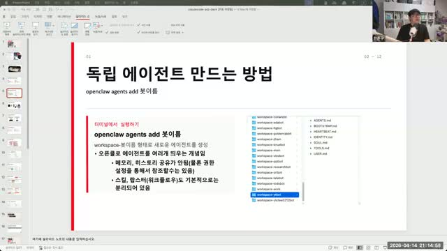
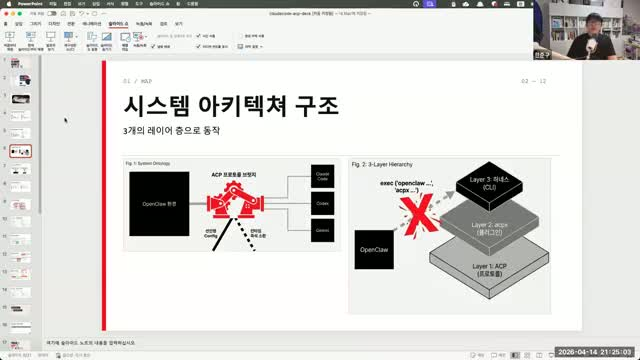
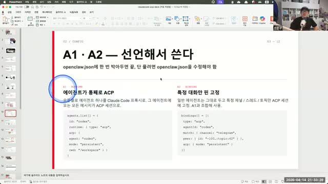
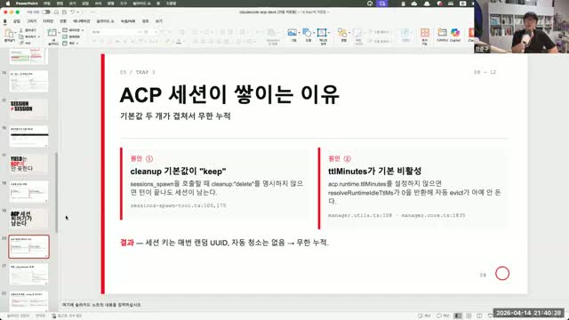
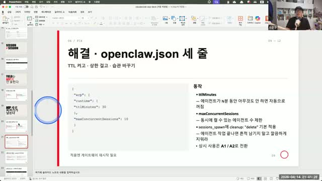
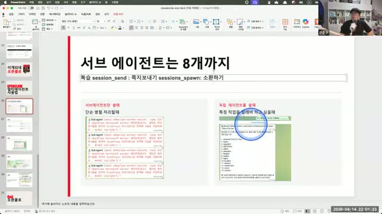
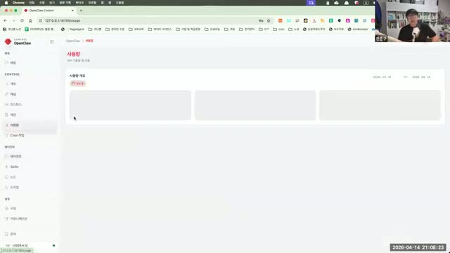
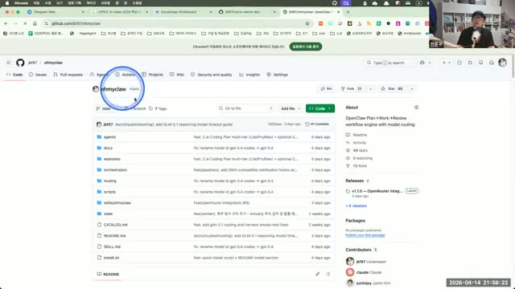

핵심: 오픈클로 봇은 "정직원(독립 에이전트)"과 "알바생(서브 에이전트)" 두 종류가 있다. 이걸 모르면 뒤의 모든 것이 헷갈린다.
| 독립 에이전트 | 서브 에이전트 |
|---|
| 비유 | 정직원 한 번 뽑으면 오래 씀 | 알바생 세션 끝나면 사라짐 |
| 저장소 | 워크스페이스 별도 (메모리·스킬 영구 보존) | 없음 (임시) |
| 최대 수 | 텔레그램 기준 20개 | 동시 8개 |
| 용도 | 유튜브봇, 블로그봇, 리서치봇 같은 전문 업무 | 번역, 검수, 피드백 같은 보조 작업 |
"독립 에이전트라는 말은 제가 붙인 말이에요. 공식 명칭은 그냥 에이전트입니다. 근데 저는 독립 에이전트라는 말을 더 좋아해요. 왜냐면 하나하나가 정직원이거든요. 한번 만들면 좀 자르기가 어렵습니다." — 코난쌤
비전공자를 위한 비유: 오픈클로는 "AI 직원 관리 시스템"이라고 보면 됩니다. 독립 에이전트는 각자 자기 사무실(워크스페이스)이 있는 정규직 직원이고, 서브 에이전트는 바쁠 때만 잠깐 부르는 일용직이에요. 정규직은 업무 기록(메모리)이 남지만, 일용직은 그날 일이 끝나면 깔끔히 퇴근합니다.
서브 에이전트를 쓰는 이유 2가지
- 컨텍스트 확장 — LLM 컨텍스트 윈도우(~200K)에 한계가 있으니, 서브를 여러 개 쓰면 지치지 않고 일관된 품질 유지
- 상호 견제 (하네스 엔지니어링) — 하나는 작업, 하나는 검수, 하나는 피드백. 가상의 팀을 만들어서 품질을 올림
이 단계에서 할 일: 터미널에서 명령어 하나 치고, 텔레그램 BotFather에서 봇 만들고, 둘을 연결한다.

코난쌤 슬라이드: openclaw agents add 봇이름으로 독립 에이전트 생성
Step 2-1. 터미널에서 에이전트 생성
openclaw agents add GPTers_bot
Creating new workspace: workspace-GPTers_bot...
? Use existing profile?
→ No (새로 만들기)
? Configure agent model & provider?
→ No (기존 설정 사용)
? Configure chat channel?
→ Yes
? Select channel:
→ Telegram
? Account ID:
→ (아래 BotFather에서 받은 봇 username 붙여넣기)
agent 아니고 agents (복수형). 뒤에 봇 이름에 _bot 붙이면 텔레그램 연결할 때 헷갈리지 않는다.
Step 2-2. 텔레그램 BotFather에서 봇 만들기
텔레그램 앱에서 @BotFather 검색해서 대화 시작:
BotFather
Alright, a new bot. How are we going to call it?
Good. Now let's choose a username. It must end in 'bot'.
Done! 🎉 Here is your bot token:
7123456789:AAH...
Use this token to access the HTTP API.
username은 겹치지 않게 + 끝이 _bot으로. 중간에 본인 아이디/닉네임 넣으면 안전. 텔레그램 계정당 최대 20개.
Step 2-3. 토큰 연결 + 마무리
? Bot Token:
→ (BotFather에서 받은 토큰 붙여넣기)
? DM Access:
→ Yes
? Pairing mode:
→ Pairing
? Binding:
→ Yes
✅ Agent GPTers_bot created in workspace-GPTers_bot/
✅ openclaw.json updated
Step 2-4. 동작 확인
GPTers_bot
안녕하세요! GPTers 봇입니다.
Status: Active | Context: 0% | Session: ready
여기까지 하면 독립 에이전트 1마리 완성. 이걸 반복하면 유튜브봇, 블로그봇, 리서치봇... 각각 전문 직원을 뽑는 것.
이 단계에서 이해할 것: "봇을 만들었으면 Claude Code 같은 외부 도구를 어떻게 연결하나?" → ACP라는 프로토콜로 연결한다. 방식이 4가지.
비전공자를 위한 비유: ACP는 "봇들이 서로 전화할 수 있는 내선 전화망"이라고 보면 됩니다. 봇 A가 Claude Code한테 "이거 해줘"라고 전화를 걸 수 있게 해주는 시스템이에요. 전화를 거는 방식이 4가지인 겁니다.

코난쌤 슬라이드: 3개 레이어 구조. CLI에서 직접 돌리는게 아님(X 표시)
3개 층 (외울 필요 없고 감만 잡기)
| Layer | 이름 | 쉽게 말하면 |
|---|
| 3 (위) | 하네스 (CLI) | 우리가 터미널에서 치는 명령어 |
| 2 (중간) | acpx (플러그인) | 명령어들을 묶어서 처리해주는 중간 관리자 |
| 1 (아래) | ACP (프로토콜) | 오픈클로 ↔ Claude Code를 연결하는 전화선 |
ACP 연결 4가지 방식

코난쌤 슬라이드: A1·A2의 실제 openclaw.json 설정 코드
두 축으로 나뉩니다: "영구 설정 vs 임시 소환" × "봇 전체 vs 특정 대화만"
| 방식 | 한 줄 설명 | 회사에 비유하면 | 해제 방법 |
|---|
| A1 영구 연결 |
봇 하나를 통째로 Claude Code에 항상 붙여놓기
openclaw.json에 저장됨, 재시작해도 유지 |
직원을 타 부서에 영구 파견 보내기 |
다른 봇한테 "풀어줘" 요청 |
| A2 부분 고정 |
특정 채팅방/주제만 Claude Code로 고정
나머지 대화는 원래대로 |
특정 프로젝트만 외주 맡기기 |
openclaw.json에서 삭제 |
| B1 소환 |
sessions_spawn으로 부르기 → 일 끝나면 해제
결과도 돌려받을 수 있고, 이어서 대화도 가능 |
급할 때 일용직 부르기 |
자동 (cleanup 설정 시) |
| B2 직접 소환 |
/acp spawn으로 내가 직접 호출 |
내가 직접 전화해서 부르기 |
자동 |
결론: 나는 뭘 쓰면 되나?
| 나의 상황 | 추천 |
|---|
| "Claude Code를 항상 쓰고 싶어" | A1 — 봇 하나를 영구 연결 |
| "여러 봇을 번갈아 일시키고 싶어" | B1 — 필요할 때만 소환 → 끝나면 해제 |
| "한 번만 급하게 시키고 끝" | B2 — 직접 호출 |
| "아직 잘 모르겠어" | B1부터 시작 — 가장 유연하고 안전 |
이걸 안 하면: ACP 세션이 무한히 쌓여서 봇이 느려지고 꼬인다. 코난쌤도 이 문제로 고생했다고 함.
비전공자를 위한 비유: 봇한테 일을 시킬 때마다 "통화 기록"이 하나씩 남는다고 보면 돼요. 근데 기본 설정이 "통화 기록 절대 안 지움"이라서, 시간이 지나면 수백 개가 쌓여요. 이걸 "30분 지나면 자동 삭제" + "동시에 10개까지만"으로 바꿔주는 겁니다.

기본값 두 개가 겹쳐서 무한 누적되는 구조

해결: openclaw.json에 세 줄 추가
왜 쌓이나?
cleanup 기본값이 "keep" → 끝나도 세션이 안 지워짐ttlMinutes 기본 비활성 → 자동 종료가 아예 안 돌아감
결과: 세션 키가 매번 랜덤 UUID로 생성되는데 자동 청소가 없으니 → 무한 누적
해결: 이 JSON을 openclaw.json에 넣기
{
"acp": {
"runtime": {
"ttlMinutes": 30
},
"maxConcurrentSessions": 10
}
}
| 필드 | 뜻 | 권장값 |
|---|
ttlMinutes | 에이전트가 N분 동안 아무것도 안 하면 자동 종료 | 30 (코난쌤은 1440=24시간으로 씀) |
maxConcurrentSessions | 동시에 돌 수 있는 세션 수 제한 | 10 |
적용 후 게이트웨이 재시작 필요. JSON 포맷 틀리면 오픈클로가 뻗을 수 있으니 백업 후 수정. 코난쌤도 당일 아침에 1시간 복구함.
이 단계에서 할 일: 봇 여러 마리가 준비됐으면, 이제 같이 일시킨다. 코난쌤이 실제로 쓰는 패턴 3개.
비전공자를 위한 비유: 직원이 여러 명이면 일시키는 방법도 여러 가지죠. ① 순서대로 릴레이 ② 동시에 각자 맡기기 ③ 한 명이 작업하면 다른 한 명이 검수 — 이 3가지입니다. 중요한 건 자연어로 그냥 말하면 된다는 거예요. "블로그 쓰고 유튜브도 만들어줘"라고 하면 봇들이 알아서 나눠 합니다.

서브 에이전트는 최대 8개. session_send(쪽지) vs sessions_spawn(소환)
패턴 1. Sequence (직렬) — A가 끝나면 B가 시작
블로그봇: 글 작성→
피규어봇: 이미지 생성→
블로그봇: 이미지 삽입 후 포스팅
패턴 2. Parallel (병렬) — 동시에 시작
블로그봇
유튜브봇
쓰레드봇
← 동시에 작업 →
결과 수합
패턴 3. Reflection (검수 루프) — 점수 넘을 때까지 반복 ⭐
A: 작업→
B: 검수→
95점 미만?↩ 다시
→
통과!
실제로 코난쌤이 시연한 것 (원소스 멀티유즈)
에이전트 스윙 하자.
블로그 코치 포스팅하고, 유튜브 9:16 숏츠 만들고, 쓰레드 만들어줘.
작업이니까 오마이클로 사용해.
아가사봇
블로그봇 → 한국어 코치 작성 중...
YT크루 → 숏츠 스크립트 작성 중...
쓰레드봇 → API 리밋 걸림 (나중에 재시도)
"그냥 블로그하고 유튜브하고 뭐 해서 누구한테 시켜 라고 하면 더 좋은데, 그렇게 하지 않아도 얘가 알아서 작업을 해주는 형태로 돌아갑니다." — 코난쌤
패턴을 코드로 묶을 필요 없이 자연어로 그냥 요청해도 된다. 코난쌤도 그렇게 씀.
라운드 로빈(한 번씩 돌아가면서) 방식도 있지만 결과가 별로라서 코난쌤이 비추천.
이 단계에서 할 일: 봇이 일하는지 확인하는 법 + 자주 터지는 문제 3개 해결법.
모니터링: 휴대폰에서 확인하는 법
코난쌤은 주로 휴대폰으로 일을 시킴 (컴퓨터는 다른 곳에 있음). 그래서 이 두 가지를 켜놔야 "먹었는지 안 먹었는지" 확인 가능:
- 대시보드에서 Verbose 켜기
- 대시보드에서 Trace 켜기

대시보드(127.0.0.1:xxxx)에서 사용량·봇 상태 확인

오마이클로(oh-my-claw): GitHub jk97/ohmyclaw
문제 1: 갑자기 바보가 됨 (Context Rot)
증상: 블로그 시키는데 이미지 계속 빼먹음, 작업이 점점 이상해짐
/status
Context: 46% ← 이 정도면 위험
/compact
Think mode → high
/new
문제 2: 풀백(Fallback) 버그
증상: OpenRouter 무료모델 한도 끝났는데 다음 모델로 안 넘어가고 멈춤
해결: 오마이클로(oh-my-claw) 설치. 자동으로 모델 라우팅 + 풀백 처리.
문제 3: 게이트웨이 사망
증상: Active Memory 같은 새 기능 켜다가 JSON 포맷 틀리면 오픈클로 자체가 뻗음
해결: openclaw.json 수정 전에 반드시 백업. 코난쌤도 아침에 1시간 복구함.
토큰 비용 (코난쌤 기준)
"토큰 후(토후)로 계산하셔야 돼요. 월급에서 클로드 구독, GPT 구독, 이것저것 다 빼고 얼마 남냐." — 코난쌤
- 코난쌤 하루 사용량: 7,500만 ~ 1억 토큰
- ChatGPT $20 플랜 2개 → 오마이클로로 자동 로테이션
- 오마이클로는 5~6개 프로바이더 동시 연결 지원
- GLM: 최근 가격 올라서 비추
보안 (개인 PC라면 대부분 안전)
| 상황 | 위험도 | 할 일 |
|---|
| 개인 PC + 상용 모델 | 95% 안전 | 그냥 쓰기 |
| 로컬/소형 모델 | 높음 | 프롬프트 인젝션 취약, 피하기 |
| Claw 스토어 스킬 설치 | 높음 | 안 받는 걸 권장 (해킹 코드 가능) |
"클로오브를 쓰지 마세요. 저는 클로오브에서 스킬 안 받습니다." — 코난쌤
한 줄 요약: 독립 에이전트 여러 개 만들고 → sessions_spawn으로 소환해서 일시키고 → 끝나면 해제. Claude Code 전담이면 A1 Persistent. 품질 중요하면 Reflection 루프. ttlMinutes 설정은 필수.